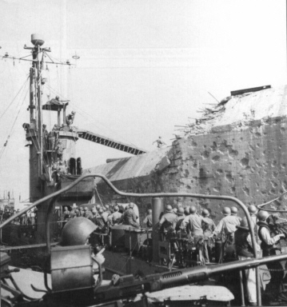

The day President Roosevelt died, USS LSM 51 proceeded on a mission
described in Time Magazine as one of the oddest of the War. The
following
is an account of the Blasting of Fort Drum as it appeared in YANK (The
Army Weekly) August 3, 1945. The earlier taking of Caballo was
the
inspiration for the plan by which the 38th Division cracked Fort
Drum.
Caballo was a horse-shaped rock and most of its garrison had been
knocked
off within a few days. A band of 60 survivors, however, had been
able to take refuge in two huge mortar pits which resisted all efforts
of infantry, engineers and artillery. They were of
reinforced
concrete and at least 20 feet thick, another case of an installation
built
by Americans and improved by the Japs. A plan was formulated
by
LTC Fred C. Dyer of Indianapolis, IN, G-4 of the 38th. An LCM was
fitted with a centrifugal pump and two tanks capable of holding more
than
5000 gallons of liquid. A special mixture of two parts Diesel oil
and one part gasoline was mixed and then pumped into the tanks.The
mixture
of oil and gas - 2400 gallons of it, was then pumped in the pits.
Tracer bullets were fired and set fire to the pits. Only charred
Japs were found when the flames died down.
This was the plan selected by BG Robert H. Soule, assistant division commander, as the best for reducing Drum.
Training and preparation for the landing were begun a week before Drum D-day. On Corregidor a reinforced platoon of riflemen from Company F, 151st Infantry and a platoon of demolition men from Company B, 113th Engineers, made repeated dry runs to school each man for his individual job when he stepped aboard Drum. On the Corregidor parade ground the surface of Drum's deck was simulated. Dummy guns and air vents were built and each rifleman was assigned to cover a specific opening in the surface of the fort. every gun turret, every air vent, every crack in the surface was to be under the sights of an M1 or a BAR so that no enemy would be able to come topside. The men went through the dry run until they could do it in their sleep.
Some engineers practiced planting explosives at strategic intervals on the rock. Others went through the motions of dragging a fire hose from the LCM to the deck of the battleship-fort. The LCM was scheduled to pull alongside Drum in the same manner used in the Caballo operation. The sally ports were ruled out as possible points of entrance when a naval reconnaissance force, attempting a landing from a PT boat, ran into machine-gun fire from the tunnel. This made it necessary to work from a ship larger than an LCM, so the 113th Engineers went to work on an especially designed wooden ramp, running like a drawbridge from the tower of an LSM. The ramp was necessary since the 40-foot walls of the island would prevent troops from landing in the usual manner.
Three sailors had been killed in the attempted PT landing and this got the Navy's dander up. To pave the way for the taking of the fort, dive bombers were called in to knock out the large guns on its top deck. On Wednesday, April 11, a cruiser steamed up and bombarded the 6-inch gun emplacements with AP shells. The cruiser broadsides weren't enough to breach the fort, but they did shut up the remaining guns.
April 13 - a Friday - was the day selected and H-hour was set for 1000. At 0830 the troops loaded from Corregidor's south dock walking a narrow plank from the pier to an LSM. The engineers carried 600 pound of explosives and the infantrymen were loaded down with rifles and bandoliers of ammunition. In the crow's nest, towering above the landing ramp, a BAR man kept lookout and below him a light machine gun was set up on an improvised platform. The BAR and the machine gun could give covering fire to the men who were to land. At 1000 hours on the nose, the LSM pulled alongside Fort Drum. It was a ticklish job to maneuver the squat, bulky ship snug and tight against the island and to hold it steady there.
As the LSM inched up on the port side of Drum, three LCVPS manned by naval personnel came up alongside her, bows first and with motors racing pushed against her side and shoved her as flat as possible against the cliff side.
As soon as the LSM was close alongside the fort, sailors standing in the well deck let down a ramp by means of a block and fall. Other sailors (Milton C. Browne and William B. McGuffie) rushed ashore across the ramp, carrying lines which they fastened to the Jap-held gun turrets or any other available projections. The LSM was made secure. These sailors were the first Yanks aboard Drum. Just after them came the infantry riflemen in single file up the circular ladder to the tower and from there, helped by sailors, onto the ramp and across it to the flat top of the fort.
Despite the strong lines from ship to fort and the pushing of the LCVPs, the LSM pitched and rolled and the ramp scraped precariously back and forth over the concrete. The operation was at its touch-and-go stage. The LCM which had been used in the Caballo invasion was brought in behind the larger LSM. A line attached to a fire hose was thrown up to the engineers on the LSM and relayed by them to the deck of Drum where other waiting engineers grabbed it and pulled up the hose.
The infantrymen had deployed according to their previous briefing on Corregidor, each man covering his objective. Every vent had its rifleman. No Jap could raise his head above the surface of the deck without running the risk of having it blown off, and the engineers went to work. They planted their explosives to do the most good in the least time. Particular attention was given to the powder magazine which lay below the surface of the first level, protected by a 6-inch armor plate under a layer of reinforced concrete.
All this while the same Diesel oil mixture that had been used on Caballo was being pumped from the LCM into the fort. It was like a high colonic enema given at sea to some ugly, gray Jap monster of the deep. As minute piled on minute, more and more oil - 3,000 gallons in all - was squirted into the bowels of Drum. In 10 minutes, the job of the engineers was finished. Thirty-minute fuses were lighted and the engineers and riflemen began to file back onto the LSM. Suddenly an unidentified engineer shouted, "The oil line's busted!"; By this time all the men were back on the LSM.
LTC William E. Lobit, CO of the 151st called for volunteers. "Six men, up here. Let's go." More than six men fell in behind him and took off up the ladder and across the ramp to the island. The oil, still pumping from the LCM which had pulled about 100 yards away, shut off the instant the hose connection broke apart. The LCM pulled in again and engineers hung over the side and repaired the break. By good luck, the hose was still above water, held up by a floating oil drum to which the next to last section had been lashed.
Col. Lobit and his men snuffed the fuses and stood by to re-light them as soon as the break could be repaired. It was while they were waiting that the first and only opposition to the combined oil enema and demolition job developed. An evidently near-sighted Jap sniper, hidden in one of the 6-inch gun turrets on the port side opened up. His aim was bad on the first two shots and gave away his position without doing any damage to the Yanks. Sailors, manning the LSM's 20-mms were ready and anxious to spray the turret, but a red-headed (Ens Treece) yelled from the bridge for them to hold fire. Oil was leaking from an aperture in the turret and if a shell ignited it, our own landing party, the LSM, the LCM and the LCVPs would probably all be blown to hell along with the Japs. The sailors held their fire.
The sniper opened up again and a bullet cut through the fatigue jacket of SGT Mack Thomson of Springfield, MO, the colonel's driver and radio operator. Thomson had been standing amidships unaware that he was a target. The bullet made seven holes, passing through the outside of the jacket, the baggy pocket and a sleeve. Thomson wasn't even scratched. Another sniper bullet grazed the back of CPL Vincent Glennon's right hand. Glennon, an aid man from Gary, IN, had dropped behind a ventilator for protection at the first sniper shot. The bullet went through the light, thin metal of the ventilator and creased his hand, drawing no more blood than a pin scratch. A sailor, Steve Bukovics, a PA native, had worse luck. A Jap shot split the fittings that connected the three air hoses to the gyroscopic sight of his 20mm gun and several pieces of the scattered wreckage were embedded in his throat. Army and Navy medics teamed up to give him an immediate transfusion and to dress his wounds. He, Glennon and Thomson were the only casualties. A bargain-basement price to pay for Fort Drum.
By now the leak had been repaired. Col. Lobit and his men relit the fuses on the island and got back safely to the ship. The lines from the LSM to Drum were cut and all the ships pulled away. Drum had received its quota of oil and the late invaders stood off in the bay to watch the show. In 30 minutes there was a slight explosion, not much more than a 4th of July token. Nothing else happened. Disappointment was written on the face of the GIs and the sailors. The job would have to be done over. But before they could even phrase a gripe, the second explosion came. In the time of an eye wink it seemed as if the whole island of El Fraile were blown out of the sea.
First there was a cloud of smoke rising and seconds later the main explosion came. Blast after blast ripped the concrete battleship. Debris was showered into the water throwing up hundred of small geysers. A large flat object, later identified as the 6-inch concrete slab protecting the powder magazine was blown several hundred feet into the air to fall back on top of the fort, miraculously still unbroken. Now the GIs and sailors could cheer. And they did. As the LSM moved toward Corregidor there were continued explosions. More smoke and debris.
Two days later, on Sunday, a party went back to try to get into the
fort through the lower levels. Wisps of smoke were still curling
through the ventilators and it was obvious that oil was still burning
inside.
The visit was called off for that day.
On Monday the troops returned again. this time they were able
to make their way down as far as the second level, but again smoke
forced
them to withdraw. Eight Japs-dead of suffocation- were found on
the
first two levels.
Another two days later another landing party returned and explored the whole island. The bodies of 60 Japs-burned to death-were found in the boiler room on the third level. The inside of the fort was in shambles. The walls were blackened with smoke and what installations there were had been blown to pieces or burned.
In actual time of pumping oil and setting fuses, it had taken just over 15 minutes to settle the fate of the "impregnable" concrete fortress. It had been a successful operation in every way but one: The souvenir hunting wasn't very good. Story filed by SGT Thomas J. Hooper, Field Correspondent. Other war correspondents coming on board included Walter Simons, Chicago Tribune, Lindesay Parrod, New York Times, Frank Kelly, New York Hearald Tribune, Guy Richards, New York Daily News.